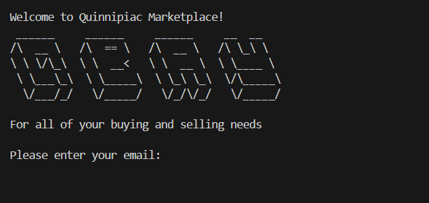
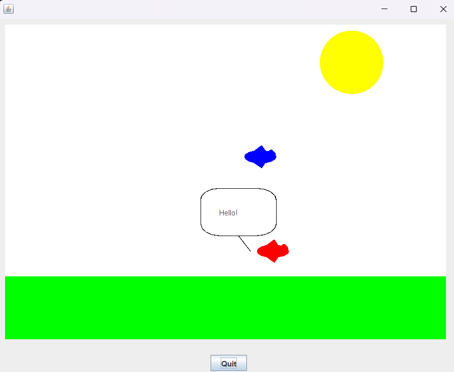
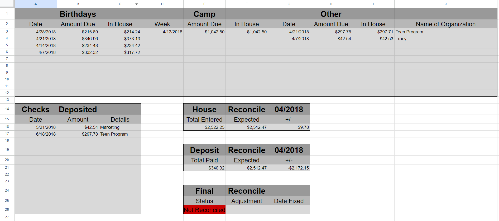
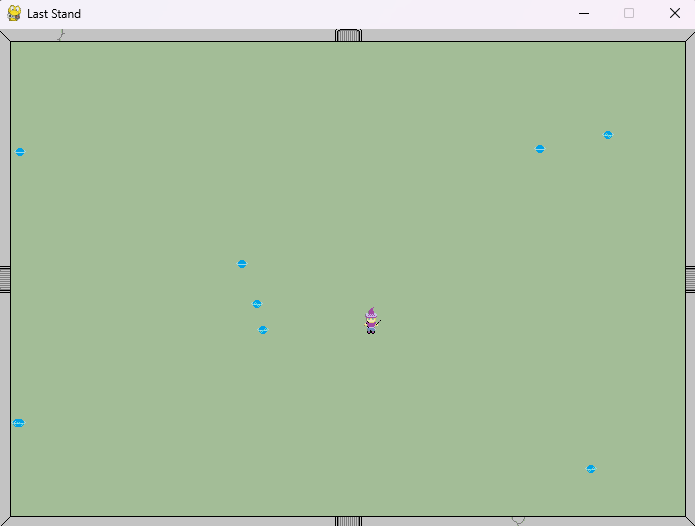

Projects
Quinnipiac Marketplace
Quinnipiac MarketplaceMy most recent project, QuinnipiacMarketplace, was great because I was able to work asynchronously with other students! This project was written in Java and was used to explore asynchronous programming through GITHub.
Drones
DronesAnother recent example is Drones, where we used an external archive as a sort of training wheels to grow accustomed to using graphics in Java.
Catering Spreadsheet
Catering SpreadsheetThe most practical programming I have done was in 2017, working as an Area Manager for Subway. I wanted to make our account balancing spreadsheet easier by making use of Google's Apps Script. Using javascript, I gave the spreadsheet its own menu and the ability to generate forms and autofill/autosort data. Unfortunately, some manual entry was still required.
Game
GameThe most fun programming I have done was in 2014 where I made the beginnings of a game in my free time. My buddy made me some nice sprites! This was written in python but, for some reason I can't remember, I decided it should be re-written in ActionScript2. Due to a busy schedule, I never got around to completing it.
